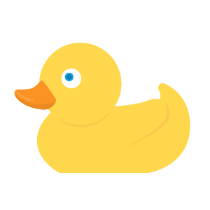

Learning the names of the animals can be quite beneficial for young children. Here you'll find a list of animal names in English and also lots of activities to help your little ones learn about the animals.
Some can swim, some can fly, and there are many different species of all sizes and shapes. Animals are all over the world , and all of them are fascinating! From a young age, children are drawn to animals. They take a special liking for those that live in very different habitats, and that have interesting characteristics such as flying or swimming.

Children’s start learning animals names and sounds from a young age. First, they learn about pets, by imitating how dogs bark and how cats meow, also the sounds chickens, frogs, and cows make. Then, as they move forward in their education, they start learning about animals habitats, including what they eat, where they live, and the different types of animals there are.
To help your little ones learn about animals, it’s useful to classify them into different groups according to similar characteristics they share. Initially, you could start by mentioning there are domestic animals and wild animals, and they move on to more specific groups like animals from different habitats.
Also, this information is a great addition to the little one’s minds. It doesn’t only help them broaden their knowledge, but it widens their vocabulary and helps them with their language skills as well. Also, learning about animals helps children are more in touch with the environment and to learn how to take care of nature.
Now, let’s start learning!
There are different types of animals, and the two main differences are that some animals are domesticated, which are the ones that have a strong relationship with humans, and others are wild. Wild animals live in nature, usually, these animals are not in contact with humans since they live in areas apart from civilization.
Another way of classifying the animals is according to where they live, like horses who live in farms, or bears that dwell in the mountains.
These are the animals that live on a farm, and also animals like cats and dogs that are more domesticated.
Dog
Cat
Cow
Duck
Here you’ll find different animals that live in forests and mountain areas of the world.
Here you’ll find different animals that live in the jungles of the world.
Here you’ll find different animals that live in the seas and rivers around the world.